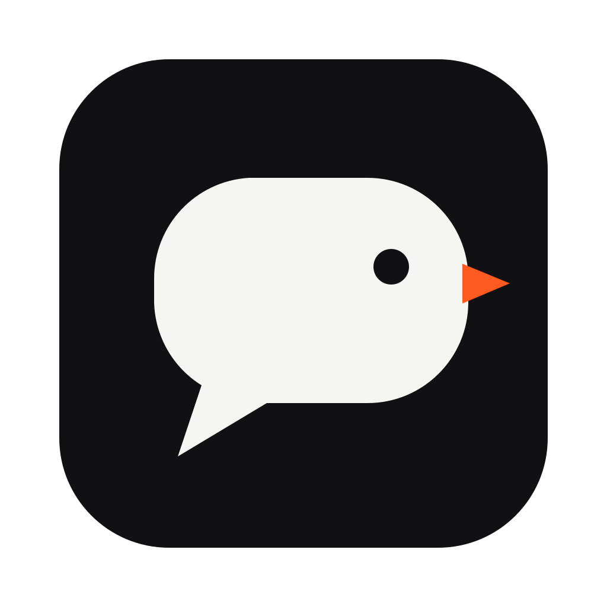

Dictation app for Mac, Windows and Linux Hold a key. Talk. Let go.
Vurb is a voice to text app that types what you said wherever your cursor is — an email, a chat window, a code editor, a form. Speech to text runs on your own computer with Whisper, so your audio never leaves it and dictation works offline.
The key is fn on a Mac and Right Control on Windows and Linux. You can change it.
Speak instead of type
Typical averages for conversational speech and keyboard typing. Your numbers will vary; Vurb's stats show your own words per minute.
Most people talk about three times faster than they type. Vurb is a way to use that in the apps you already have open.
How it works
-
1
Hold the key
Click into any text field, then hold your dictation key. A small pill appears at the bottom of the screen while it listens.
-
2
Talk
Say it the way you'd say it out loud. It detects the language on its own, so switching between English and Spanish is fine.
-
3
Let go
The text is typed where your cursor is. Press Esc before letting go to throw it away.
For longer stretches, double-tap the key. It keeps listening until you tap it again.
What the dictation app does
- Any app
- If there's a text cursor, it works there: email, chat, documents, code editors, forms.
- Local transcription
- OpenAI Whisper via whisper.cpp, on your own computer. Works offline.
- Speed
- About 0.3s for a 12-second clip on Apple Silicon with the best model.
- 90+ languages
- Detected automatically, including switching between languages.
- Custom vocabulary
- Names, product terms and jargon, spelled the way you spell them.
- History and stats
- Search past dictations; see words per minute, streaks and time saved.
Private, offline speech to text
Your audio never leaves your computer. It's transcribed on the device and discarded. Your transcripts, history and stats stay in the app's folder on your machine.
AI cleanup is optional and off until you turn it on. When it's on, only the text goes to Anthropic, using your own API key. We don't run analytics on this site.
Voice to text for your kind of work
Eight kinds of work, with examples of what you say and what gets typed.
Developers
Commit messages, PR descriptions, review comments and prompts for coding assistants.
Writers & creators
First drafts, outlines, scripts and captions, talked out and edited later.
Sales
Call notes and follow-ups written while the conversation is still fresh.
Customer support
Ticket replies and internal notes without the typing backlog.
Students
Lecture notes, essay drafts and emails, in more than one language.
Lawyers
Memos and correspondence dictated on a machine that keeps the audio.
Accessibility
Less typing for people with RSI, limited mobility or dyslexia.
Founders & managers
Updates, feedback and decisions written down instead of put off.
Dictation for your computer
The same hold-to-talk dictation on every desktop, plus guides to getting the most out of it.
Dictation for Mac
fn to talk, fast on Apple Silicon, macOS 13 and later.
Voice to text for Windows
Right Control to talk, on Windows 10 and 11.
Speech to text for Linux
Local Whisper models on x64 desktops using X11.
Offline dictation
What works without the internet, and why your audio stays put.
Voice typing tips
How to dictate cleanly: punctuation, corrections, vocabulary.
Free dictation software
What the free plan includes, and when Pro is worth it.
Download Vurb
Free to start. macOS 13+, Windows 10/11, Linux (X11).